Çölyak Hastalığı Nedir?
Çölyak hastalığı sadece "karın ağrısı" değildir; bağışıklık sisteminin glutene karşı başlattığı bir "iç savaş"tır. Genetik yatkınlık burada başroldedir ve bu durum yaşamın herhangi bir anında, hatta emeklilikte bile ortaya çıkabilir!
Çölyak hastalığı; buğday, arpa, çavdar ve bazı bireylerde yulafta bulunan gluten proteinine karşı ince bağırsakta gelişen otoimmün (bağışıklık kaynaklı) kronik bir hastalıktır.
Gluten alındığında bağışıklık sistemi, ince bağırsağın iç yüzeyini kaplayan villus adı verilen emilim uzantılarına saldırır. Bu durum villus atrofisi (körelmesi) ile sonuçlanır ve besin emilimi bozulur. Zamanla demir, kalsiyum, folik asit ve B12 vitamini gibi önemli besin öğelerinin emilimi azalır.
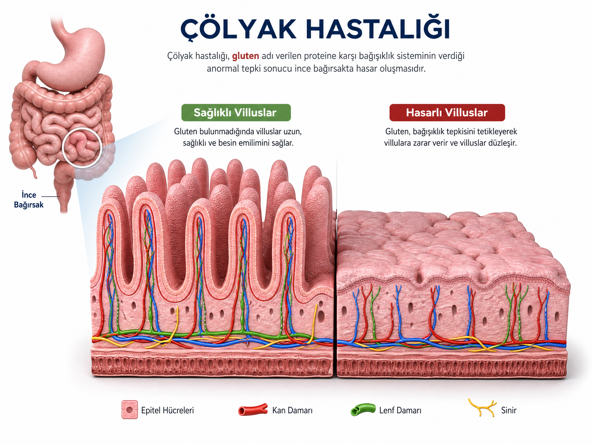
Hastalık genetik yatkınlık temellidir (HLA-DQ2 ve HLA-DQ8 genleri). Birinci derece akrabalarda görülme riski %10'a kadar çıkar. Çölyak bir alerji değildir, intolerans da değildir — otoimmün bir hastalıktır.

📖 İlgili Konular
❓ Sık Sorulan Sorular
Hayır, ömür boyu süren bir hastalıktır. Tek tedavisi ömür boyu glutensiz diyettir. Diyet uygulandığında bağırsak iyileşir ancak hastalık tamamen geçmez.
Evet, genetik yatkınlık temellidir. HLA-DQ2 ve HLA-DQ8 genleri taşıyan bireylerde risk daha yüksektir. Birinci derece akrabalarda görülme riski %10'a kadar çıkar.
Türkiye ve Dünyada Çölyak İstatistikleri
Dünya genelinde her 100 kişiden 1'i çölyaklıdır. Yani bir stadyum dolusu insanın içinde yüzlerce gizli çölyaklı olabilir! Çoğu kişi belirtileri "yorgunluktandır" ya da "havadandır" diyerek geçiştirdiği için tanı koymak bazen dedektiflik gerektirir.
- Dünyada görülme sıklığı yaklaşık %1 (her 100 kişiden 1'i). Kaynak: Celiac Disease Foundation
- Türkiye'de prevalansın %0,03 – %1 arasında olduğu tahmin edilmektedir. Kaynak: Türk Gastroenteroloji Vakfı
- Kasım 2023 itibarıyla tanısı konmuş hasta sayısı: 166.614 — ancak tanısı konulmamış çok sayıda "buzdağının altındaki" hasta vardır. Kaynak: T.C. Sağlık Bakanlığı
- Kadınlarda erkeklere göre yaklaşık 2 kat daha sık görülür.
- 2024 verilerine göre her yıl yeni tanı oranı artmakta, farkındalık arttıkça tanı konan hasta sayısı da yükselmektedir.
Her 100 kişiden 1'inde çölyak görülüyor. Ancak tanısı konmamış hasta sayısının çok daha fazla olduğu tahmin ediliyor. Belirtileriniz varsa mutlaka bir uzmana danışın.

📖 İlgili Konular
Çölyak Belirtileri (Yaş Gruplarına Göre)
Çölyak sadece mideyi değil, bazen ruhu da yorar. Demir eksikliğinden depresyona, cilt döküntüsünden eklem ağrısına kadar o kadar çok kılığa girer ki, ona tıp dünyasının "bukalemunu" desek yeridir.
👶 Bebek ve Küçük Çocuklarda
- Kronik ishal veya kabızlık
- Karında öne doğru şişkinlik (karın gerginliği)
- Kusma, iştahsızlık
- Kilo alamama, büyüme geriliği
- Huzursuzluk, sinirlilik, ağlama nöbetleri
🧒 Okul Çağı Çocuklarda
- Karın ağrısı ve şişkinlik (özellikle yemeklerden sonra)
- Boy kısalığı, gecikmiş büyüme ve puberte
- Kansızlık (demir eksikliği anemisi)
- Diş minesi bozuklukları (renk değişimi, çukurlaşma)
- Okulda dikkat dağınıklığı, öğrenme güçlüğü
🧑 Ergen ve Yetişkinlerde
- Kronik yorgunluk, halsizlik
- Demir, B12, folik asit eksikliği (anemi)
- Osteoporoz / osteopeni (kemik erimesi)
- İnfertilite, tekrarlayan düşükler
- Depresyon, anksiyete, "sisli beyin" (bilişsel bozukluk)
- Dermatitis herpetiformis (kaşıntılı, kabarcıklı cilt döküntüsü)
- Ağız içi aftlar, migren, baş ağrıları
- Eklem ağrıları, kas ağrıları
Atipik (Sessiz) Çölyak: Sindirim şikayeti olmadan, sadece anemi, osteoporoz veya infertilite gibi bulgularla ortaya çıkabilir. Bu nedenle risk gruplarında (Tip 1 diyabet, tiroid hastalıkları, Down sendromu) tarama yapılması önerilir.
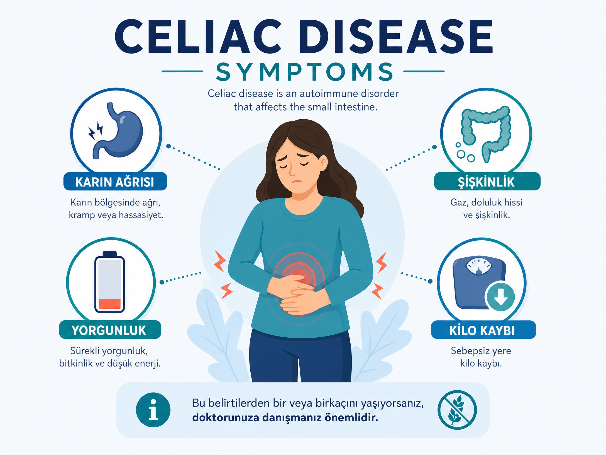
Belirtiler kişiden kişiye büyük farklılık gösterir. Bazı hastalarda hiç sindirim şikâyeti olmayabilir. Bu nedenle şüphe durumunda mutlaka doktora başvurulmalı ve gerekli testler yaptırılmalıdır.

📖 İlgili Konular
Çölyak Tanısı Nasıl Konur?
Test öncesi glutensiz diyete başlanmamalıdır! Aksi hâlde sonuçlar yanlış negatif çıkar. Testler sırasında gluten tüketimine devam edilmelidir. Kesin tanı için biyopsi şarttır.
1. Serolojik (Kan) Testleri
- Anti-doku transglutaminaz (Anti-tTG IgA) — en yaygın tarama testi, duyarlılığı yüksektir.
- Anti-endomisyum antikoru (EMA) — yüksek özgüllüğü ile bilinir.
- Total IgA düzeyi — IgA eksikliği durumunda yanlış negatifliği önlemek için.
- Deamide gliadin peptid antikorları (DGP) — özellikle küçük çocuklarda kullanışlıdır.
2. Endoskopi ve İnce Bağırsak Biyopsisi
Kesin tanı için altın standarttır. Duodenumdan alınan biyopside villus atrofisi araştırılır ve Marsh sınıflaması ile derecelendirilir (Marsh 0-4).
3. Genetik Test
HLA-DQ2/DQ8 — dışlama amaçlı kullanılır. Bu genler yoksa çölyak hastalığı olasılığı neredeyse sıfırdır.
4. Gluten Yükleme Testi (Provokasyon)
Tanı net değilse veya hasta diyete başlamışsa, belirli bir süre gluten yüklemesi yapılarak testler tekrarlanabilir.
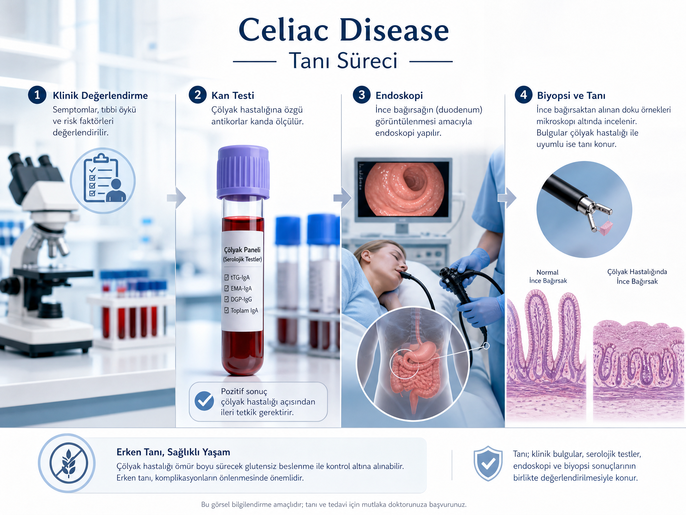

📖 İlgili Konular
Çölyak vs Gluten Hassasiyeti vs Buğday Alerjisi
Gluten hassasiyeti ve çölyak aynı şey değildir! Çölyak, bağışıklık sisteminin bağırsaklara "Seni tanımıyorum!" diyerek saldırdığı ciddi bir durumdur. Gluten hassasiyeti ise daha çok "Seni sevmiyorum ama canını da yakmıyorum" tadında bir küslüktür.
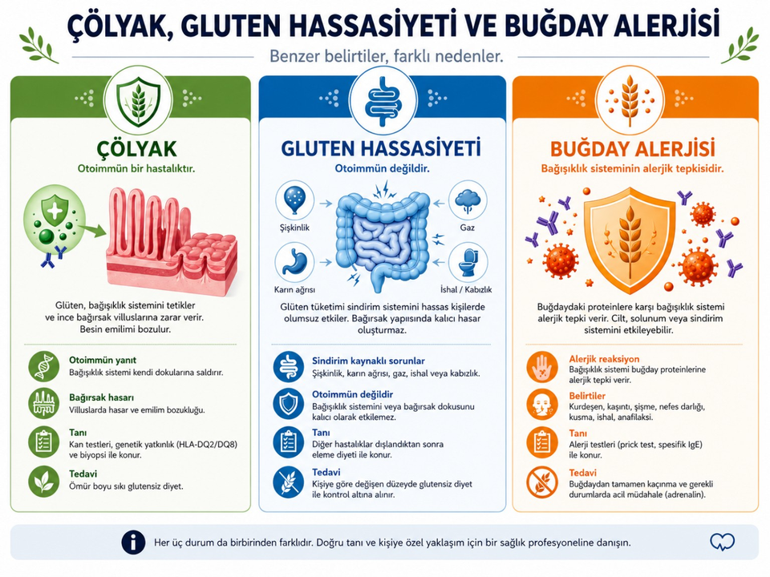
- Çölyak: Otoimmün, bağırsak hasarı, villus atrofisi, HLA-DQ2/DQ8, ömür boyu glutensiz diyet.
- Non-Çölyak Gluten Duyarlılığı (NCGS): Bağırsak hasarı yok, antikorlar negatif, belirtiler glutensiz diyetle düzelir, kesin tanı kriteri yoktur.
- Buğday Alerjisi: IgE aracılı, ani alerjik reaksiyon (ürtiker, anafilaksi), buğdaydan kaçınma yeterlidir.
Non-çölyak gluten duyarlılığı (NCGS) tanısı, çölyak ve buğday alerjisi dışlandıktan sonra konur. Belirtiler glutensiz diyetle düzelir ancak bağırsak hasarı yoktur. NCGS'nin mekanizması tam olarak bilinmemektedir.

Çölyak Hastalığı Tedavisi
Diyete başladıktan sonra mutlaka bir diyetisyen eşliğinde beslenme planı oluşturun. Derneğimiz bu konuda rehberlik hizmeti sunmaktadır.
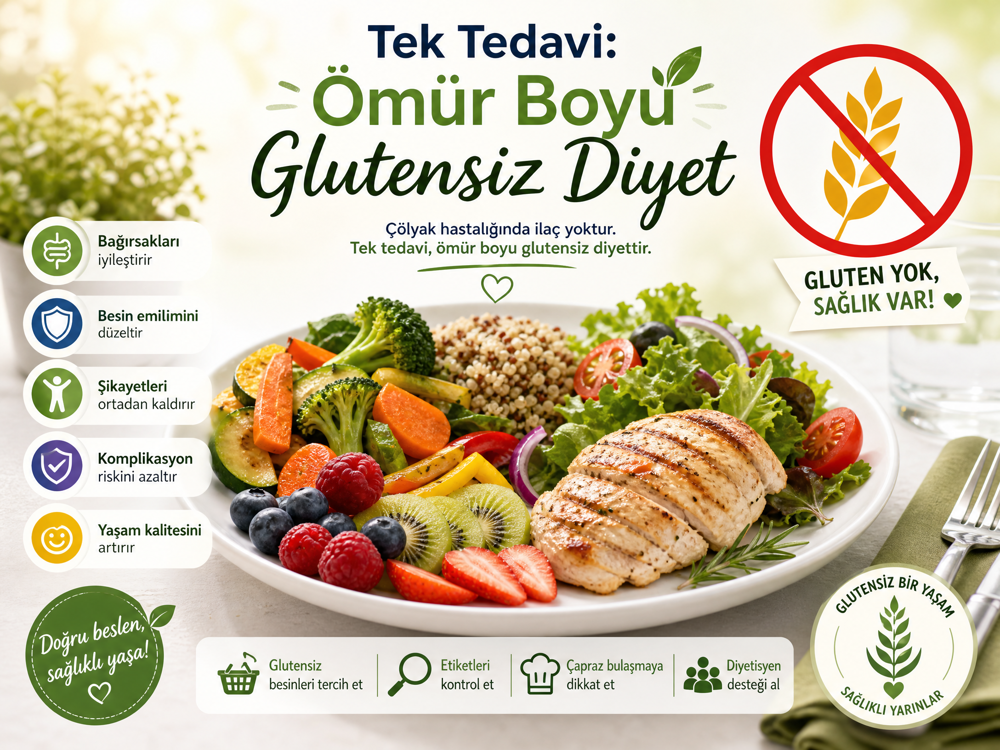
Tek ve kesin tedavi: Ömür boyu %100 glutensiz diyet. Henüz onaylanmış ilaç tedavisi yoktur, ancak çeşitli klinik çalışmalar devam etmektedir (örneğin, latiglutenaz enzimleri, zamaglutenaz, ve aşı çalışmaları).
- Diyete uyum sağlandığında ince bağırsak yaklaşık 6 ay – 2 yıl içinde iyileşir.
- Tanı sonrası eksik olan vitamin ve mineraller (D vitamini, B12, demir, folik asit, kalsiyum) takviye edilir.
- Yıllık kontrol: Antikor takibi, kemik yoğunluğu ölçümü (DEXA), tam kan sayımı, tiroid fonksiyon testleri.
- Refraktör çölyak (dirençli çölyak) nadir görülen ciddi bir formdur; uzman takibi ve immünsüpresif tedavi gerekebilir.
- Diyet dışında psikososyal destek de tedavinin önemli bir parçasıdır.
2024 yılı itibarıyla birkaç ilaç adayı Faz 2 ve Faz 3 aşamasındadır. Bu ilaçlar, glutenin parçalanmasını sağlayarak veya bağışıklık yanıtını baskılayarak çalışmaktadır. Henüz hiçbiri onaylanmamıştır, ancak umut verici gelişmeler mevcuttur.

Glutensiz Beslenme — Yasaklı ve Serbest Gıdalar
Üzerinde "Glutensiz" yazan her şey süper sağlıklı bir iksir değildir! Bazı ürünler glutenin yokluğunu aratmamak için şeker ve yağla "torpil" yapılmış olabilir. Etiket okumak, çölyaklılar için bir hobi değil, hayatta kalma sanatıdır.
❌ YASAK Gıdalar (Gluten İçerir)
- Tahıllar: Buğday (tüm türleri), arpa, çavdar, yulaf (sertifikasız), kılçıksız buğday, bulgur, irmik, kepek, malt
- Ekmek ve hamur işleri: Ekmek, pide, lavaş, simit, poğaça, kek, kurabiye, makarna, erişte, börek, krep, gofret
- İçecekler: Bira, malt içeren içecekler, bazı hazır kahveler
- Hazır ürünler: Hazır çorbalar, bulyonlar, salçalı köfteler, soya sosu (buğday içerebilir), hardal, ketçap (bazı markalar)
- İşlenmiş et: Sosis, salam, sucuk (katkı maddeleri nedeniyle)
- Şekerlemeler: Bazı çikolatalar, sakızlar, şekerler (buğday nişastası içerebilir)
✅ SERBEST Gıdalar (Doğal Olarak Glutensiz)
- Tahıllar: Pirinç, mısır, karabuğday, kinoa, darı, teff, amarant, sorgum
- Meyve ve sebzeler (taze veya dondurulmuş, katkısız)
- Et, tavuk, balık (işlenmemiş, katkısız)
- Yumurta, süt, yoğurt, peynir (katkısız doğal olanlar)
- Kuru baklagiller: Nohut, mercimek, fasulye, bezelye
- Kuruyemişler (çiğ, tuzsuz), patates, tatlı patates, bal, zeytinyağı, tahin
Yulaf: Sertifikasız yulaf çapraz bulaşma riski taşır. Sadece "glütensiz yulaf" etiketi taşıyan ürünler tüketilebilir.
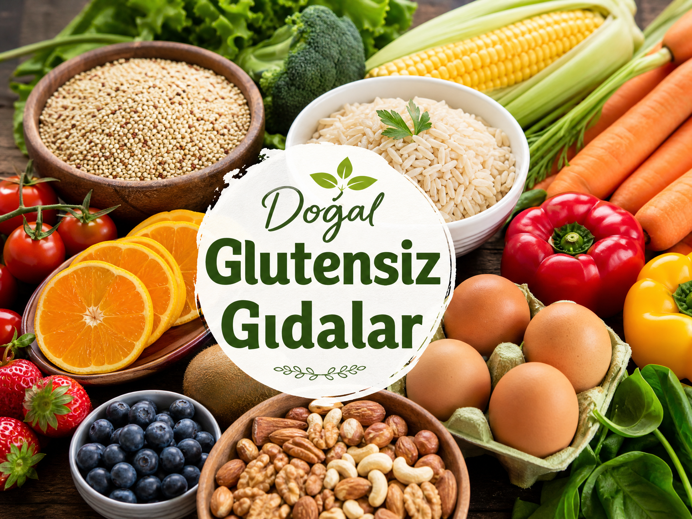
Etiket okurken "modifiye nişasta", "doğal aroma", "malt aroması", "hidrolize bitkisel protein", "dekstrin", "maltodekstrin" gibi terimlere dikkat edin. Bunlar gizli gluten kaynağı olabilir. Ayrıca "gluten içermez" ibaresi aranmalıdır.

Etiket Okuma Rehberi
08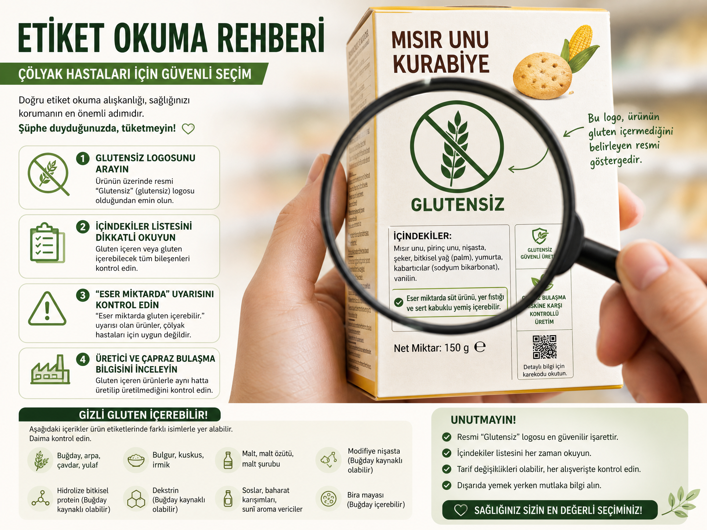
- Türk Gıda Kodeksi'ne göre "glutensiz" ibaresi için ürünün 20 mg/kg (20 ppm) altında gluten içermesi gerekir.
- Sadece ön yüz değil, arka etiket ve içindekiler bölümü de mutlaka okunmalıdır.
- Ürünün üretildiği tesisin çapraz bulaşma riski olup olmadığı kontrol edilmelidir. "Aynı tesiste buğday işlenmektedir" uyarısı varsa risklidir.
- Güvenli logolar: Başaklı çölyak logosu (Crossed Grain), AOECS (Avrupa Çölyak Dernekleri Birliği) onayı, TSE gluten-free sertifikası.
"Modifiye nişasta", "doğal aroma", "malt aroması", "hidrolize bitkisel protein", "dekstrin", "maltodekstrin" gibi terimler gizli gluten kaynağı olabilir. Daima şüpheci olun ve üretici ile iletişime geçmekten çekinmeyin.

Çapraz Bulaşma ve Önleme
Çölyaklılar için bir ekmek kırıntısı bile "mikroskobik bir saatli bomba" gibidir. Mutfakta aynı tahtayı kullanmak veya aynı kaşıkla karıştırmak, masum bir hata değil, bağırsaklar için küçük bir felaket senaryosu olabilir!
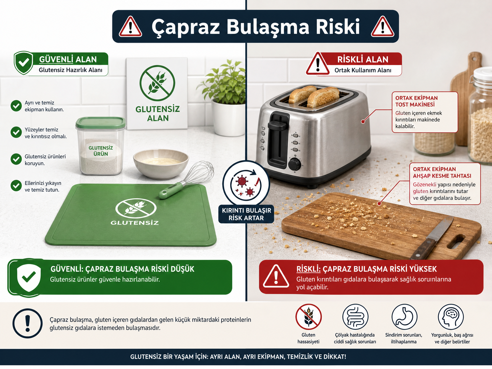
Çapraz bulaşma, glutensiz bir gıdanın hazırlık, pişirme veya servis sırasında glutenli bir gıda ile temas etmesidir. 1/8 çay kaşığı kadar un bile hasara neden olabilir.
Evde Alınması Gereken Önlemler
- Ayrı mutfak ekipmanları: Tost makinesi, kesme tahtası, hamur açacağı, süzgeç, ekmek bıçağı, tencereler, tavalar (özellikle yapışmaz yüzeyler).
- Ayrı kavanozlar: Reçel, bal, tereyağı, Nutella, mayonez, hardal — asla iki kez batırılmış bıçak kullanmayın.
- Ayrı raf/dolap: Glutensiz ürünler üstte, glutenliler altta olacak şekilde düzenleyin.
- Ayrı sünger ve bulaşık bezi kullanın.
- Kızartma yağı asla ortak kullanılmamalıdır.
- Fırın, ocak ve tezgâh her kullanımdan önce iyice temizlenmeli (deterjan ve bol su ile).
- Un havada 24-72 saat asılı kalabilir; bu nedenle glutenli hamur yoğrulan yerde glutensiz üretim yapılmamalıdır.
- Eğer evde hem glutensiz hem de glutenli yemek pişiriliyorsa, önce glutensiz yemek hazırlanmalıdır.
Dışarıda Yemek Yerken
- Restoranı önceden arayıp bilgi almak ve rezervasyon sırasında durumu belirtmek.
- "Çölyak menüsü" olan mekânları tercih etmek (uygulama kullanarak).
- Salatalarda kruton, çorbalarda un uyarısı yapılmalı.
- Izgara veya hamburger ızgarasıyla aynı yerde pişirilmemeli, ayrı alan veya ayrı ekipman talep edilmeli.
- Kızartmalar ortak yağda yapılmamalı.
Glutenli hamur yoğrulan ortamda glutensiz üretim yapılmamalıdır. Un partikülleri havada saatlerce asılı kalabilir ve çapraz bulaşmaya neden olabilir. Restoranlarda ayrı bir alan talep edin.

Çocuklarda Çölyak ve Okul Yaşamı
Çocuğunuzun okulunda glutensiz beslenme konusunda farkındalık yaratmak için derneğimizden bilgilendirme materyalleri ve sunum desteği alabilirsiniz. Ayrıca okulda bir "çölyak acil durum planı" oluşturmanızı öneririz.
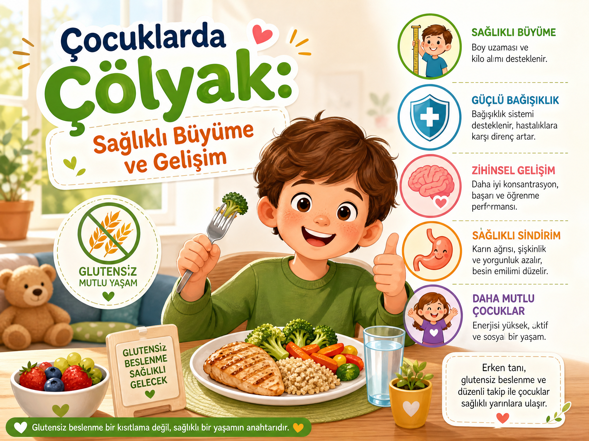
- Ek gıdaya geçiş: 4-7. aylar arasında ve anne sütü ile birlikte glutenli gıdaya başlanması önerilir (ESPGHAN 2020). Ancak ailede çölyak varsa doktor kontrolünde yapılmalıdır.
- Öğretmen bilgilendirmesi: Sınıf öğretmeni, rehber öğretmen ve okul yönetimi bilgilendirilmeli, çocuğun durumu hakkında bilgi verilmelidir.
- Beslenme çantası: Çocuğun günlük glutensiz yiyecekleri hazırlanmalı, okulda bir "çölyak kartı" bulundurulmalı.
- Kutlamalar: Doğum günü ve kutlamalarda alternatif ikram bulundurma konusunda öğretmenle işbirliği yapılmalı.
- MEB Rehberi: Milli Eğitim Bakanlığı Çölyaklı Öğrenci Rehberi okullara sunulmuştur; bu rehber okulda uygulanabilir.
- Sosyal destek: Çocuğun dışlanmaması için sosyal destek programlarının önemi büyüktür. Akran zorbalığına karşı duyarlı olunmalı.
- Yaz kampları ve geziler: Okul yemeklerinde ve gezilerde alınacak önlemler önceden planlanmalı, çocuğa uygun beslenme sağlanmalı.

Psikososyal Etkiler ve Aile Desteği
Yalnız değilsiniz! Derneğimiz bünyesinde düzenli destek grupları ve psikososyal danışmanlık hizmeti sunulmaktadır. Detaylı bilgi için bize ulaşın. Ayrıca online platformlarda da destek grupları mevcuttur.
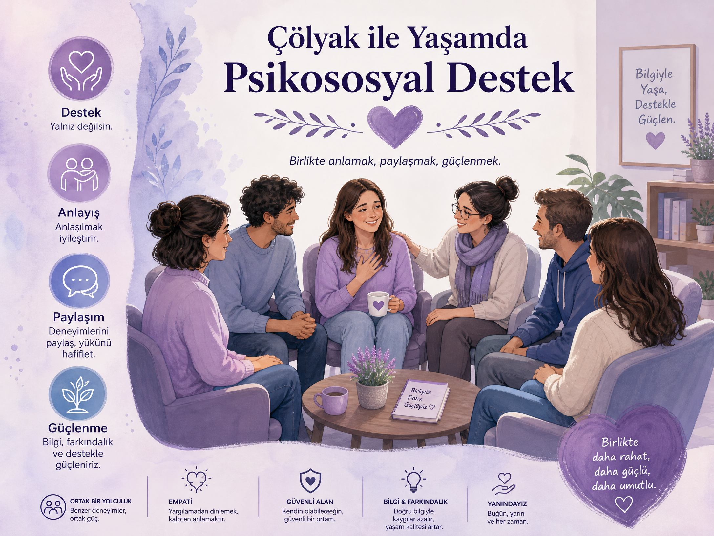
- Tanı sonrası "yas süreci": İnkâr, öfke, pazarlık, depresyon ve kabullenme aşamaları yaşanabilir. Bu süreçte psikolojik destek almak önemlidir.
- Sosyal izolasyon riski: Davetlerde, restoranlarda, okul etkinliklerinde dışlanma hissi yaşanabilir. Arkadaş çevresinin bilgilendirilmesi ve anlayışı önemlidir.
- Depresyon ve anksiyete: Çölyak hastalarında genel popülasyona göre daha yüksek oranlarda görülür. Diyet uyumu ile bu belirtiler azalabilir.
- Aile yükü: Özellikle annelerin yaşadığı bakım yükü ve stres. Aile içi iletişim ve destek mekanizmaları kurulmalıdır.
- Ergenlerde uyumsuzluk: Diyete uyumsuzluk problemi yaygındır. Ergenlik döneminde akran baskısı ve sosyal kaygılar artar.
- Destek mekanizmaları: Dernek destek grupları, akran paylaşımı, psikolojik danışmanlık hizmetleri, online forumlar ve sosyal medya grupları.

Tedavi Edilmeyen Çölyağın Uzun Vadeli Komplikasyonları
Bu komplikasyonların çoğu, glutensiz diyete başlandıktan sonra önlenebilir veya geri döndürülebilir. Erken tanı ve diyet hayat kurtarır! Bu nedenle şüpheniz varsa test yaptırın.
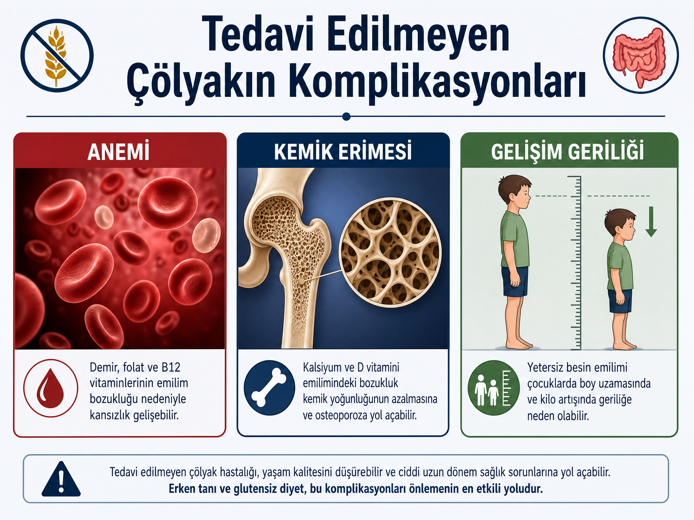
- Osteoporoz ve osteopeni: Kalsiyum ve D vitamini emilim bozukluğu nedeniyle erken kemik erimesi görülür.
- Anemi: Demir, B12, folik asit eksikliğine bağlı kansızlık.
- İnfertilite ve tekrarlayan düşükler: Besin emilim bozukluğu ve otoimmün süreçler.
- Nörolojik komplikasyonlar: Periferik nöropati, ataksi, epilepsi, migren.
- Karaciğer hastalıkları: Karaciğer enzim yüksekliği, otoimmün hepatit, yağlı karaciğer.
- Bağırsak lenfoması (EATL) ve ince bağırsak adenokarsinomu: Risk artışı, özellikle diyete uyumsuzlukta.
- Diğer otoimmün hastalıklarla birliktelik: Tip 1 diyabet, Hashimoto tiroiditi, Sjögren sendromu, otoimmün karaciğer hastalıkları.
- Büyüme geriliği: Çocuklarda boy ve kilo gelişiminde gerilik.
- Dermatit herpetiformis: Kaşıntılı, kabarcıklı cilt döküntüsü.

Türkiye'de Çölyak Hastalarına Sağlanan Destekler
SGK başvuru sürecinde derneğimiz rehberlik hizmeti sunmaktadır. Başvuru evrakları ve dilekçe örneği için bize ulaşabilirsiniz. Güncel bilgiler için her yıl SGK duyurularını takip edin.
SGK Aylık Destek Ödemeleri (Nisan 2026 %30 zam ile güncel)
- 0-5 yaş: ~447 TL/ay
- 5-15 yaş: ~692 TL/ay
- 15 yaş üstü: ~617 TL/ay
(Nisan 2026 %30 zam ile güncellenmiş miktarlar — SGK resmi verileri)
Başvuru İçin Gerekenler
- Sağlık kurulu raporu (tam teşekküllü hastaneden, çölyak tanısı kesinleşmiş olmalı).
- SGK'ya başvuru dilekçesi (örneği dernekten temin edilebilir).
- SGK il müdürlüklerinden yapılabilir.
Diğer Destekler
- Bazı illerde Sosyal Yardımlaşma ve Dayanışma Vakfı (SYDV) gıda kolileri.
- Bazı belediyelerin glutensiz gıda destekleri (her ilde farklı, araştırılmalı).
- Askerlik muafiyeti (askerliğe elverişli olmayan raporu).
- Bazı üniversite yemekhanelerinde glutensiz menü (örneğin, Ege Üniversitesi, Hacettepe vb.).
- Özel dernek ve vakıfların burs ve yardım programları.
- "Çocuklar İçin Özel Gereksinim Raporu" (ÇÖZGER)

Kırıkkale'de Glutensiz Yaşam
Yerel rehberimizde Kırıkkale'deki tüm glutensiz ürün satan noktaları ve çölyak dostu mekanları bulabilirsiniz. Yerel Rehber Sayfamızı ziyaret edin.
Yerel Rehber
Kırıkkale'de glutensiz yemek yiyebileceğiniz restoranlar ve glutensiz ürün satan marketler.


Kırıkkale Çölyak Derneği
15Kırıkkale Çölyak Derneği, çölyak hastalarına ve ailelerine destek olmayı, farkındalık yaratmayı ve glütensiz yaşamı kolaylaştırmayı amaçlayan bir sivil toplum kuruluşudur.
Hizmetlerimiz
- Üyelik ve Gıda desteği başvurusu.
- Gıda desteği ve stok takibi (ihtiyaç sahiplerine yönelik).
- Yerel rehber ve işletme bilgileri (güncel listeler).
- Eğitim seminerleri, konferanslar ve farkındalık etkinlikleri.
- Hertürlü destek ve danışmanlık (bireysel ve grup). Whatsapp Grubu
- SGK başvuru rehberliği.
İletişim
- Telefon: 0543 295 46 71
- E-posta: kirikkalecolyak@gmail.com
- Adres: Kırıkkale Merkez (randevu ile görüşme)
- Web: www.kirikkalecolyak.org.tr
Yararlı Kaynaklar
Bu kaynaklar bilimsel ve güvenilir kurumlar tarafından hazırlanmıştır. Herhangi bir sağlık sorununuzda mutlaka doktorunuza danışın.
ÇÖZGER Raporu (Çocuklar İçin Özel Gereksinim Raporu)
ÇÖZGER, 18 yaş altı çocuklar için düzenlenen yeni nesil rapordur. Eski engelli raporunun yerini almıştır ve "gereksinim" temellidir. Çölyak hastası çocuklar bu raporla birçok devlet desteğinden faydalanabilir.
ÇÖZGER, "Çocuklar İçin Özel Gereksinim Raporu" demektir. 20 Şubat 2019 tarihinde yürürlüğe giren yönetmelikle birlikte 18 yaş altı çocuklar için engellilik oranı yerine gereksinim düzeyi esas alınır.
Çölyak hastası çocuklara, Sindirim Sistemi Alanı C3 maddesi kapsamında, tıbbi şartlar sağlanırsa Belirgin Düzeyde Özel Gereksinim (BÖGV) veya Özel Koşul Gereksinimi (ÖKGV) düzeyinde rapor verilebilir.
- ÖGV (Özel Gereksinim Var) → %20-39
- Hafif Düzey → %40-49
- Orta Düzey → %50-59
- İleri Düzey → %60-69
- Çok İleri Düzey → %70-79
- BÖGV (Belirgin) → %80-89 (Ağır engelli)
- ÖKGV (Özel Koşul) → %90-99 (Ağır engelli)
Tıbbi Şartlar (BÖGV/ÖKGV için)
Raporda yüksek düzey alabilmek için kronik malnutrisyon ve büyüme geriliği kanıtlanmalıdır. Bunlar:
- Son 6 ayda en az 60 gün ara ile yapılan iki ölçümde, yeterli tedaviye rağmen beslenme yetersizliği.
- Hb < 10 gr/dl, veya albümin ≤ 3 gr/dl, veya vitamin/mineral eksikliği.
- Büyüme geriliği: 2 yaş altında boya göre ağırlık < 3. persantil; 2 yaş üstünde VKİ < 3. persantil.
Başvuru Adımları
- Randevu: ALO 182 veya MHRS üzerinden "Sağlık Kurulu / ÇÖZGER" polikliniğine randevu alın.
- Belgeler: Kimlik fotokopileri, eski tetkikler, ilaç raporları ile başvurun.
- E-Nabız: Tüm hekimlerin eski sonuçlarını görmesine izin verin.
- Muayene: Gastroenteroloji uzmanı görüşü alınır, gerekirse çocuk kurula çağrılır.
- Rapor Teslimi: Rapor e-Devlet veya E-Nabız üzerinden alınır (en geç 30 gün içinde).
Haklar ve Faydalar
- SGK Çölyak Desteği (Gıda Yardımı): 0-5 yaş ~447 TL/ay, 5-15 yaş ~692 TL/ay, 15+ ~617 TL/ay (2026).
- Evde Bakım Maaşı: BÖGV/ÖKGV raporu ile Aile ve Sosyal Hizmetler Bakanlığı'na başvurulabilir (gelir şartı var).
- Engelli Kimlik Kartı: BÖGV/ÖKGV ile "refakatli" kart alınabilir.
- Özel Eğitim ve Okul Nakli: RAM aracılığıyla kaynaştırma eğitimi, adrese yakın okul nakli.
- Ulaşım ve Fatura İndirimleri: Belediyeye göre ücretsiz toplu taşıma, su/electric/telefon/internet indirimleri, THY ve otobüs indirimleri.
- ÖTV Muafiyeti: ÖKGV (%90+) ile araç alımında ÖTV istisnası.
- ÇÖZGER Raporu → Devlet hastaneleri (Sağlık Bakanlığı)
- SGK Desteği → SGK il müdürlükleri / e-Devlet
- Evde Bakım Maaşı ve Kimlik Kartı → Aile ve Sosyal Hizmetler İl Müdürlüğü
- Özel Eğitim / Okul Nakli → RAM ve İlçe Milli Eğitim Müdürlüğü
- Belediye/Kaymakamlık Gıda Yardımları → SYDV
Çölyak Hastaları İçin Askerlik Muafiyeti
Çölyak hastaları, TSK Sağlık Yeteneği Yönetmeliği kapsamında askerlikten muaf tutulabilir. Ancak başvuru sürecinde diyetinizi asla bozmayın! Hastaneler bazen eski raporları kabul etmeyip yeniden test isteyebilir; bu, sağlığınızı ciddi şekilde tehlikeye atar.
Çölyak hastalığı, ömür boyu süren ve yalnızca ömür boyu glütensiz diyet ile kontrol edilebilen kronik bir otoimmün hastalıktır. Askerlik gibi beslenmenin standart ve katı kurallara bağlı olduğu bir ortamda, çölyak hastalarının beslenme kontrolü sağlaması neredeyse imkânsızdır. Bu nedenle TSK, çölyak hastalarını askerliğe elverişsiz sayar.
Yasal Dayanak
- 7179 sayılı Askerlik Kanunu ve TSK Sağlık Yeteneği Yönetmeliği (Resmi Gazete No: 29530).
- Çölyak hastalığı, yönetmeliğin Ek-B maddesinde "Sindirim Sistemi / Malabsorbsiyon Sendromları" başlığında yer alır.
Muafiyet Dilimleri
| Dilim | Açıklama | Askerlik Durumu |
|---|---|---|
| A | Hafif seyirli veya iyileşmiş | Elverişli |
| B | Orta/ağır hastalık – kilo kaybı 11-20 kg | Elverişli Değil (Muaf) |
| C | Geçici engel | Erteleme |
| D | Çok ağır – kilo kaybı 21 kg ve üzeri | Elverişli Değil (Muaf) |
(B ve D dilimleri çölyak hastaları için muafiyet sebebidir.)
Başvuru Süreci
- e-Devlet üzerinden askerlik yoklama işlemlerini başlatın ve sağlık sorununuzu beyan edin.
- Askerlik şubesine başvurun, aile hekimine sevk edilirsiniz.
- Aile hekimi sizi Gastroenteroloji bölümü olan yetkili bir hastaneye sevk eder.
- Hastane sağlık kurulu, TSK Sağlık Yeteneği Yönetmeliği'ne göre değerlendirme yapar.
Gerekli Tıbbi Belgeler
- İlk tanı raporu (üniversite veya devlet hastanesinden).
- Anti-tTG, EMA antikor sonuçları.
- Endoskopi ve biyopsi raporları (patoloji sonucu).
- Varsa eski sağlık kurulu raporları.
- Diyet takip kartları, vitamin ve mineral eksikliklerini gösteren kan sonuçları.
Bazı hastaneler eski tanı raporlarını kabul etmeyip "sil baştan tanı koyalım" diyebilir ve glutensiz diyeti bırakmanızı isteyebilir. Bu, bağırsak dokusunda hızlı ve şiddetli inflamasyona yol açar. Önceden tanı konmuş bir hastanın diyeti bozularak yeniden test edilmesine gerek yoktur. Eski biyopsi ve antikor raporlarınızı ibraz edin ve doktorunuza diyete devam ettiğinizi belirtin.
İtiraz Hakkı
Eğer sağlık kurulu sizi "elverişli" bulursa, kararın tebliğinden itibaren 30 gün içinde askerlik şubesine dilekçe ile itiraz edebilirsiniz. Şube sizi başka bir hastaneye sevk eder ve farklı bir heyet tarafından yeniden değerlendirme yapılır.
Muafiyet Sonrası
- "Askerliğe Elverişli Değildir" kararı alırsınız (çürük raporu).
- Bu durum devlet memurluğuna veya özel sektörde çalışmaya engel değildir. Ancak polis, asker, bekçi gibi silahlı veya ağır saha şartları gerektiren kadrolarda ek sağlık şartları aranabilir.
- Erteleme (C dilimi) alırsanız, rapor süresi dolunca tekrar muayene olursunuz. Çölyak ömür boyu sürdüğü için doğru belgelerle başvurulduğunda genellikle kalıcı muafiyet (B veya D) verilir.
Bu bilgiler 2026 yılı itibarıyla güncel mevzuata dayanmaktadır. Yasal düzenlemeler değişebilir, en güncel bilgi için askerlik şubenize veya derneğimize danışınız.